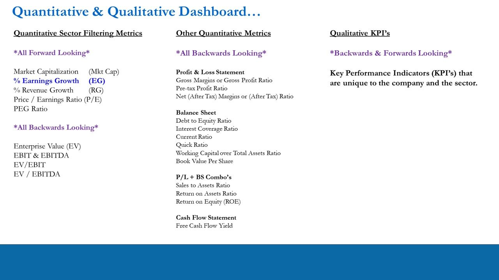
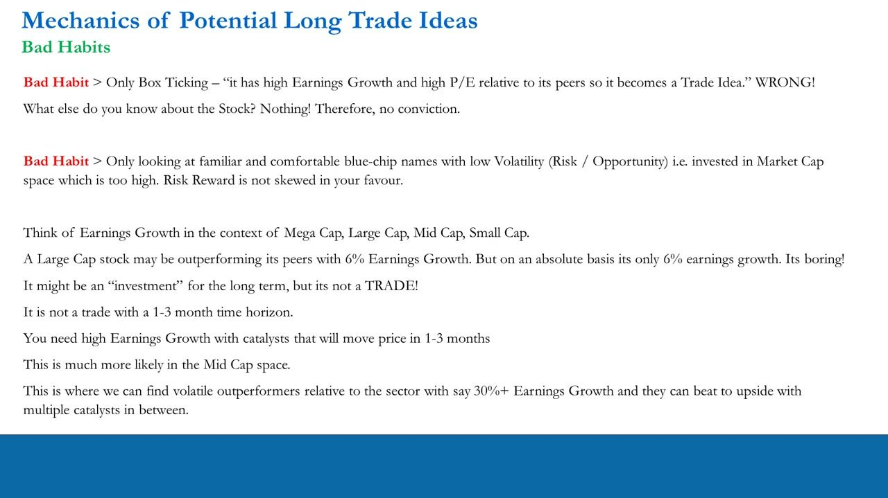
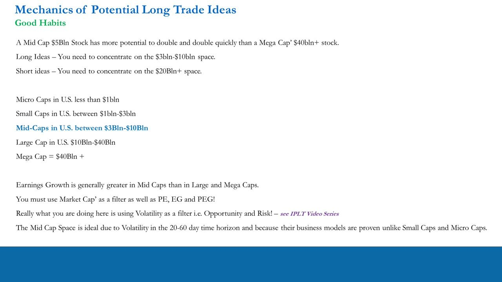
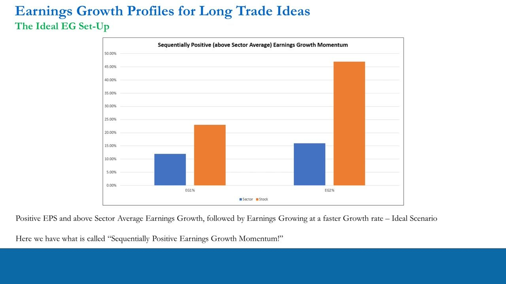
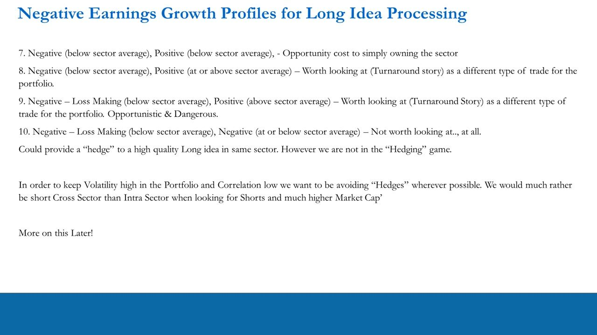
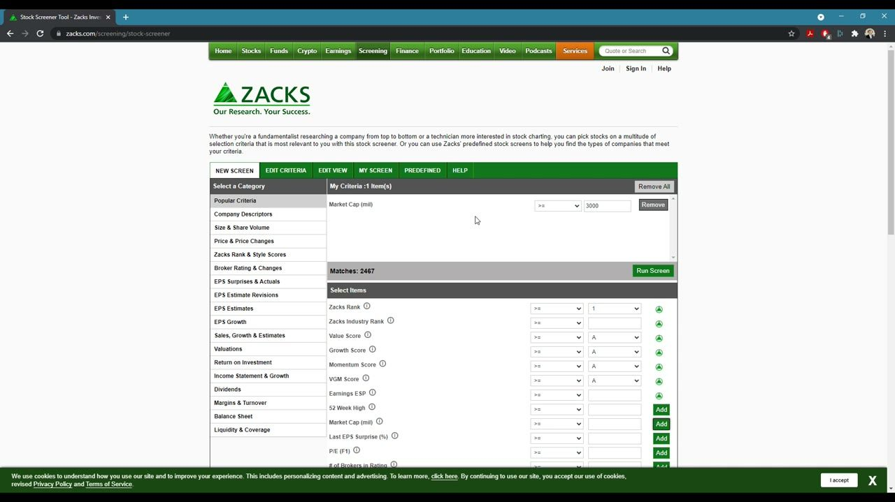
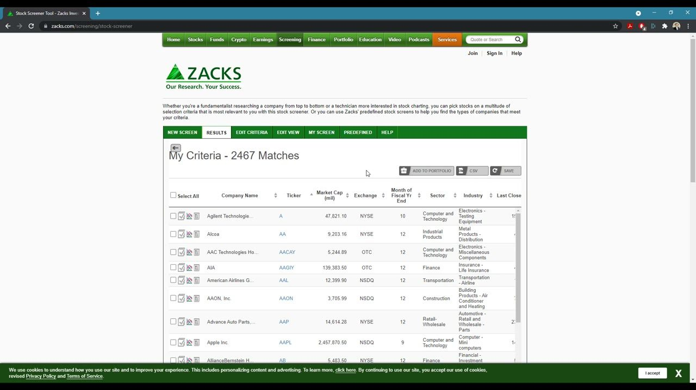
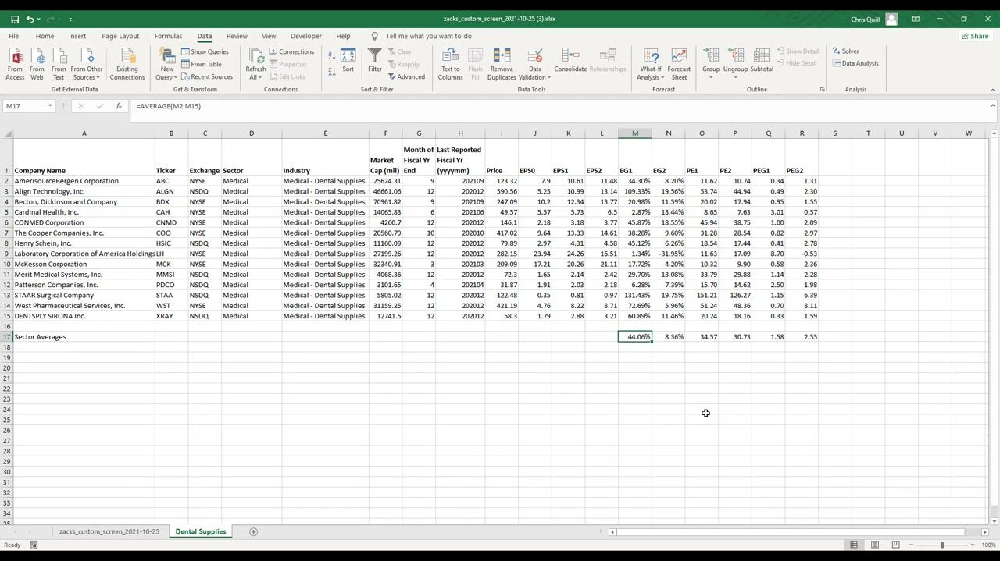

Trade Idea Generation – Quantitative Processing 4
The synthesis of the quant block: the mechanics of finding LONG ideas — why mid-caps ($3–10bn), why absolute Earnings Growth beats familiarity, the ideal 'sequentially positive above-sector-average EG momentum' profile — then a hands-on Zacks-screener → Excel funnel that whittles a sector down to a shortlist.
Longs live in the $3–10bn mid-cap space where high absolute Earnings Growth plus catalysts can move price in 1–3 months; the practical funnel is a market-cap-filtered screen exported to Excel, EG/PE/PEG computed with three formulas, sector averages taken, then above-average AutoFilters that reduce a sector's peers to a handful of outliers.
The gist
- Market cap is a FILTER, not just data. Longs: concentrate on the $3–10bn mid-cap space. Shorts: the $20bn+ space. US tiers — Micro <$1bn, Small $1–3bn, Mid $3–10bn, Large $10–40bn, Mega $40bn+. Mid-caps carry higher Earnings Growth and volatility, so a $5bn stock has more potential to double (and quickly) than a $40bn+ mega-cap.
- The absolute Earnings Growth number matters. A large-cap outperforming its peers on 6% EG is 'not a trade' on a 1–3-month horizon — it may be an investment, but it is boring. Mid-caps are where you find volatile outperformers on 30%+ EG that can beat to the upside with multiple catalysts in between.
- The ideal long set-up is 'Sequentially Positive (above Sector Average) Earnings Growth Momentum': positive EPS, EG above the sector in BOTH periods, and the stock's own EG accelerating in period 2 vs period 1 (illustrative EG1 Stock ~23% vs Sector ~12%, EG2 Stock ~47% vs Sector ~16%). The ideal P/E backdrop is a premium to sector in both periods, with PE2 < PE1 because EPS is higher in period 2.
- Ten EG profiles run from the ideal down through weaker positive cases to negative/loss-making ones. Cases 8 and 9 — negative EG turning positive around or above the sector average — are 'turnaround' and 'turbo-turnaround' stories: their magnitude gets attention, but they are opportunistic and dangerous, a different type of trade, not the classic long.
- The hands-on funnel: Zacks stock screener → Market Cap (mil) ≥ 3000 → 2,467 matches → export CSV to Excel → build columns EG=(EPS1−EPS0)/ABS(EPS0), PE=Price/EPS1, PEG=PE1/(EG1×100), copy a single industry to its own sheet, add a Sector-Averages row with =AVERAGE, then apply Above-Average AutoFilters to isolate outliers.
- Worked example — Medical Dental Supplies (14 peers): sector averages EG1 44.06%, EG2 8.36%, PE1 34.57, PE2 30.73, PEG1 1.58, PEG2 2.55. An Above-Average PE1 filter leaves 4, then Above-Average EG1 & EG2 filters leave 3 — Align (ALGN), CONMED (CNMD) and STAAR Surgical (STAA). This is the START of the micro dive, not a trade.
Where this sits — the quant/qualitative dashboard and bottom-up analysis
- Forward-looking sector-filtering metrics: Market Capitalization, % Earnings Growth (EG), % Revenue Growth, P/E Ratio, PEG Ratio.
- Backwards-looking metrics: Enterprise Value, EBIT & EBITDA, EV/EBIT, EV/EBITDA, then P&L, Balance-Sheet and Cash-Flow ratios, plus qualitative KPIs unique to the company and sector.
- Bottom-up analysis has two halves: the Quantitative Process (Identify Outliers) and the Qualitative Process (Learn Stock Info, Identify KPIs, Identify Catalysts).
- Statistical significance in your track record only arrives over 100–150 trades / 12–18 months — the framework is about repeatable process, not one call.
Videos 22–24 built the metrics. This lesson is the synthesis: how you actually USE the forward filters to find long ideas, and a Chris Quill spreadsheet tutorial that does it end-to-end.

Bad habits — box-ticking and the comfort of blue-chips
- Bad habit: box-ticking. 'It has high EG and high P/E relative to its peers so it becomes a trade idea.' WRONG — you know nothing else about the stock, therefore you have no conviction.
- Bad habit: only looking at familiar, comfortable blue-chip names with low volatility — investing in a market-cap space that is too high, where risk/reward is not skewed in your favour.
- Think of Earnings Growth in the context of Mega / Large / Mid / Small cap. A large-cap can outperform its peers on 6% EG, but on an absolute basis 6% is boring.
- That might be a long-term investment, but it is not a TRADE with a 1–3 month time horizon. You need high EG with catalysts that move price in 1–3 months — far more likely in the mid-cap space, where volatile outperformers can run 30%+ EG and beat to the upside.
The point is that the spreadsheet is only the first step. It surfaces candidates; conviction comes from the qualitative work — KPIs and catalysts — that follows.

Good habits — market cap as a filter (the US size tiers)
- A mid-cap $5bn stock has more potential to double, and double quickly, than a mega-cap $40bn+ stock.
- Long ideas — concentrate on the $3bn–$10bn space. Short ideas — concentrate on the $20bn+ space.
- US market-cap tiers: Micro <$1bn · Small $1bn–$3bn · Mid $3bn–$10bn · Large $10bn–$40bn · Mega $40bn+.
- Earnings Growth is generally greater in mid-caps than in large and mega-caps, so use Market Cap as a filter alongside PE, EG and PEG. Really you are using volatility — opportunity AND risk — as a filter.
- The mid-cap space is ideal for the 20–60 day horizon because the volatility is there AND the business models are proven, unlike small-caps and micro-caps.

The ideal set-up — sequentially positive EG momentum
- In identifying positive outliers, always look first at Earnings Growth and P/E. EG is usually the most important factor and drives high P/E and PEG — a high EG means the market is willing to pay a premium via P/E and PEG.
- The ideal EG profile: positive EPS, above-sector-average Earnings Growth, then earnings growing at a FASTER rate — 'Sequentially Positive (above Sector Average) Earnings Growth Momentum'. Illustrative: EG1 Stock ~23% vs Sector ~12%; EG2 Stock ~47% vs Sector ~16%.
- The ideal P/E set-up: the stock's P/E sits at a premium to the sector in both periods, but PE2 is LOWER than PE1 because EPS is higher in period 2 (illustrative Sector 24→21, Stock 39→27).
- Ideally the sector's own EG is also trending higher. This is the classic 'bread and butter' long identification set-up — a growth name — for a 20–60 day horizon.
- Learn this default first; other types of long ideas exist for different market conditions and portfolio bias, covered later.
The download EG_Profiles_Longs holds the worked chart values: Sector EG1 12% / EG2 16%; the ideal Stock EG1 23% / EG2 47%. 'Sequentially positive above-sector-average EG momentum' just means the company's earnings grow faster than the sector in both periods AND faster in period 2 than period 1.

The ten EG profiles — from ideal to turnaround
- Cases 1–6 span positive profiles: from the ideal (Stock 23%→47% vs Sector 12%→16%) through above-average-but-flat, above-then-less-positive, below-then-above, down to below-sector-average in both periods (Stock 8%→12%) — progressively weaker; case 4 and below, you can do better in another sector.
- Case 7: negative EG in period 1 recovering to below-average positive in period 2 — merely an opportunity cost versus owning the sector.
- Case 8 — Negative (below sector average) then Positive (at or above sector average): a 'turnaround story'. Worth a look as a DIFFERENT type of trade (illustrative Stock EG1 −11% → EG2 +9%; a variant −32% → +16%).
- Case 9 — Negative & LOSS-MAKING then strongly Positive (above sector average): the 'turbo-turnaround' — EPS goes from negative to positive, recovering 100% of losses (illustrative EG1 −25% → EG2 +100%). Biggest magnitude move; opportunistic AND dangerous.
- Case 10 — Loss-making then still negative (EG1 −44% → EG2 −9%): not worth looking at at all. It could 'hedge' a quality long in the same sector, but we are not in the hedging game — we keep portfolio volatility high and correlation low, preferring cross-sector, higher-market-cap shorts over intra-sector hedges.
As traders on a 20–60 day horizon we want momentum, so the first requirement is positive EPS, then positive (ideally accelerating, above-sector) EG. The turnaround/turbo-turnaround cases earn attention purely on the magnitude of the swing — a separate playbook from the classic long.

The funnel step 1 — screen on Market Cap and export
- Chris Quill tutorial: get freely available stock data (Zacks stock screener, zacks.com), download it, and organise it so a trader can identify positive and negative outliers. This comes AFTER cleaning the data.
- In the Zacks Stock Screener, NEW SCREEN → set Market Cap (mil) >= 3000 (the $3bn mid-cap floor). Zacks' own tooltip: value is in millions — Mid Cap is $1B–$10B (1000–10,000).
- One criterion (Market Cap ≥ 3000) returns Matches: 2,467.
- In EDIT VIEW pick the display columns — Sector, Industry, Market Cap, Last Close, Last Yr's EPS (F0), F1 & F2 Consensus Estimates, etc. — then RESULTS → export to CSV and open in Excel.
The single market-cap filter is deliberately loose — it just removes the micro/small-cap floor so what remains is tradeable. All the discriminating work happens in Excel afterwards.

The funnel step 2 — build EG, PE and PEG columns
- In Excel, rename the raw EPS columns EPS0 / EPS1 / EPS2 (0 = last year, 1 = current forward year, 2 = next year), and clean the OTC listings out (filter Exchange to keep NYSE/NSDQ).
- Add analytic columns EG1, EG2, PE1, PE2, PEG1, PEG2.
- Earnings Growth: EG1 in M2 = =(K2-J2)/ABS(J2) — (EPS1 − EPS0) / ABS(EPS0). Wrap the denominator in ABS so the sign of the growth stays correct even when EPS flips sign year-to-year. Fill down.
- P/E: PE1 in O2 = =I2/K2 — Price / EPS1. Fill across/down for PE2.
- PEG: PEG1 in Q2 = =O2/(M2*100) — PE1 / (EG1 × 100). Fill across/down for PEG2.
Three formulas turn a raw Zacks dump into the forward valuation grid — EG, PE and PEG for the current and next fiscal year — for every one of the ~1,900 NYSE/NSDQ names.

The funnel step 3 — isolate a sector, take averages, filter above-average
- Filter the Industry column to one sector (worked example: 'Medical - Dental Supplies' → 14 companies), copy them onto their own sheet, and rename the tab.
- Add a Sector-Averages row: =AVERAGE(M2:M15) filled across EG/PE/PEG. Dental-Supplies averages — EG1 44.06%, EG2 8.36%, PE1 34.57, PE2 30.73, PEG1 1.58, PEG2 2.55.
- To find where the market pays a premium for earnings, AutoFilter PE1 → Number Filters → Above Average. That leaves 4 of 14.
- Then add Above-Average filters on EG1 and EG2 (keeping the PE1 filter) to demand above-sector-average growth in both forward years. That leaves 3 of 14 — Align (ALGN), CONMED (CNMD) and STAAR Surgical (STAA).
- That trio is the START of the micro dive, not a trade. Below-average / loss-making names (e.g. Cardinal Health) may be turnaround or value-trap candidates; big low-EG names (PE below sector, cap $20bn+) point toward the short side — both worked the same way in later videos.
The AutoFilter mechanic operationalises 'above sector average': premium P/E first (the market rates the earnings), then accelerating above-average EG. Fourteen peers become three outliers to research.

Glossary
- US market-cap tiers (as a filter)Micro <$1bn · Small $1bn–$3bn · Mid $3bn–$10bn · Large $10bn–$40bn · Mega $40bn+. Longs are hunted in the $3–10bn mid-cap space (higher EG + volatility; more room to double quickly); shorts in the $20bn+ space. Market cap is used as a filter alongside PE, EG and PEG — really a proxy for volatility (opportunity and risk).
- Absolute Earnings Growth mattersA stock can outperform its peers yet still be 'boring' on an absolute basis — a large-cap on 6% EG is 'not a trade' on a 1–3-month horizon (perhaps an investment). Traders want high absolute EG (30%+) with catalysts that move price in 1–3 months, which is far more likely in mid-caps.
- Sequentially Positive (above Sector Average) EG MomentumThe ideal long profile (case 1): positive EPS, Earnings Growth above the sector average in BOTH periods, and the stock's own EG accelerating in period 2 vs period 1 — ideally with the sector's EG also trending higher. Paired with a P/E at a premium to sector in both periods but with PE2 < PE1 (because EPS is higher in period 2). The classic 'bread and butter' growth long.
- Turnaround / Turbo-turnaround (cases 8 & 9)Case 8: negative EG (below sector) in period 1 recovering to positive (at/above sector) in period 2 — a turnaround story. Case 9: loss-making with negative EG in period 1, then a massive swing to strongly positive EG above the sector (e.g. −25% → +100%, recovering 100% of losses) — the turbo-turnaround. The magnitude gets attention, but both are opportunistic and dangerous — a different type of trade, not the classic long.
- The screen → Excel funnelZacks Stock Screener, Market Cap (mil) ≥ 3000 → 2,467 matches → export CSV to Excel (rename EPS0/EPS1/EPS2, drop OTC) → build EG=(EPS1−EPS0)/ABS(EPS0), PE=Price/EPS1, PEG=PE1/(EG1×100) → copy one Industry to its own sheet → =AVERAGE Sector-Averages row → Above-Average AutoFilters on PE1 then EG1/EG2 to isolate outliers. This is stage one of the micro analysis, run after building the macro picture and cleaning the data.
- The forward-column formulasEG1 = =(K2-J2)/ABS(J2) i.e. (EPS1 − EPS0) / ABS(EPS0) — the ABS keeps the growth sign correct across sign flips in EPS. PE1 = =I2/K2 i.e. Price / EPS1. PEG1 = =O2/(M2*100) i.e. PE1 / (EG1 × 100). Each is filled down all rows and across for the period-2 (…2) columns.
- Dental-Supplies worked example14 'Medical - Dental Supplies' peers. Sector averages: EG1 44.06%, EG2 8.36%, PE1 34.57, PE2 30.73, PEG1 1.58, PEG2 2.55. Above-Average PE1 filter → 4 names; adding Above-Average EG1 & EG2 → 3 names: Align (ALGN), CONMED (CNMD), STAAR Surgical (STAA). The output is a shortlist to research, not a trade.